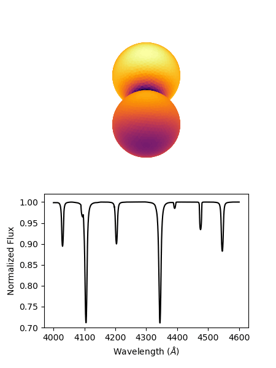
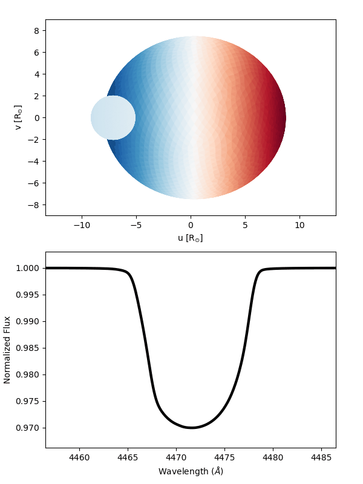

SPAMMS
Whether it be due to rapid rotation or binary interactions, deviations from spherical symmetry are common in the lives of massive stars. As a star deviates from spherical symmetry, the change in radius leads to changes in the surface gravity, temperature and ionization balance across across the surface, which in turn changes the spectral appearance of these stars. Unfortunately, these 3D effects are often neglected when analyzing the spectra of distorted massive stars. With this in mind, we developed the SPAMMS code.
SPAMMS (Spectroscopic PAtch Model for Massive Stars) is a powerful spectroscopic analaysis tool that accounts for the 3D geometry and the resulting surface effects when calculating synthetic spectra. SPAMMS works in 4 steps. First, based on the physical and binary parameters (if applicable) a 3D mesh is generated representing the surface. Second, the mesh is populated with local conditons such as temperature, surface gravity, and so on. Third, based on the local conditions, precomputed synthetic line profiles are assigned to each mesh triangle across the surface. Finally, the visible surface is integrated over resulting in a synthetic spectrum. These steps can be seen below:

SPAMMS allows you to model a system at any inclination or phase. Thus, by computing several SPAMMS synthetic spectra at different phases, you can demonstrate how the spectrum of a system changes throughout the orbit.
In this case, we are modelling the massive overcontact binary VFTS 352. In the top panel, the facecolor of the mesh traingles show the local temperature distribution across the surface while the bottom panel shows the integrated spectrum at the given phase shown in the top panel.
With SPAMMS not only can you model both components of binary systems simultaneously, but you can also directly account for rotational broadening without needing to convolve with a rotational kernel. This is because when assigning the synthetic spectral line profiles across the surface, SPAMMS accounts for the individual radial velocity shift of each triangle across the surface. This removes several free parameters, and also allows you to accurately reproduce the rotational profile for asymetric stars like the components of an overcontact system.
In addition, SPAMMS allows you to model many 3D effects that are impossible to reproduce using 1D codes. For example, an important effect used to characterize the orbit of transiting exoplanets is the Rossiter-Mclaughlin effect. As the planet passes in front of the star, it blocks out some of the light from the star. If the star is rotating, then the transiting planet may change the shape of the spectral line as it blocks different regions of the star, and thus change the measured radial velocity.
This effect is not limited to planetary transits. In this case, we show a made up system where the primary is rapidly rotating and the secondary is contributing a negligible flux. The face colors of the mesh are showing the radial velocities of each triangle with blue indicating blueshifted patches and red indicating redshifted patches. As the secondary passes in front of the primary, we see the spectral line distort as the region of the star that contributes to that portion of the line are blocked. This is just one of many interesting 3D effects that can be modelled with SPAMMS.
If you would like to learn more about SPAMMS, see our paper published in A&A here, and if you are interested in using SPAMMS for your own science, visit our GitHub page here.